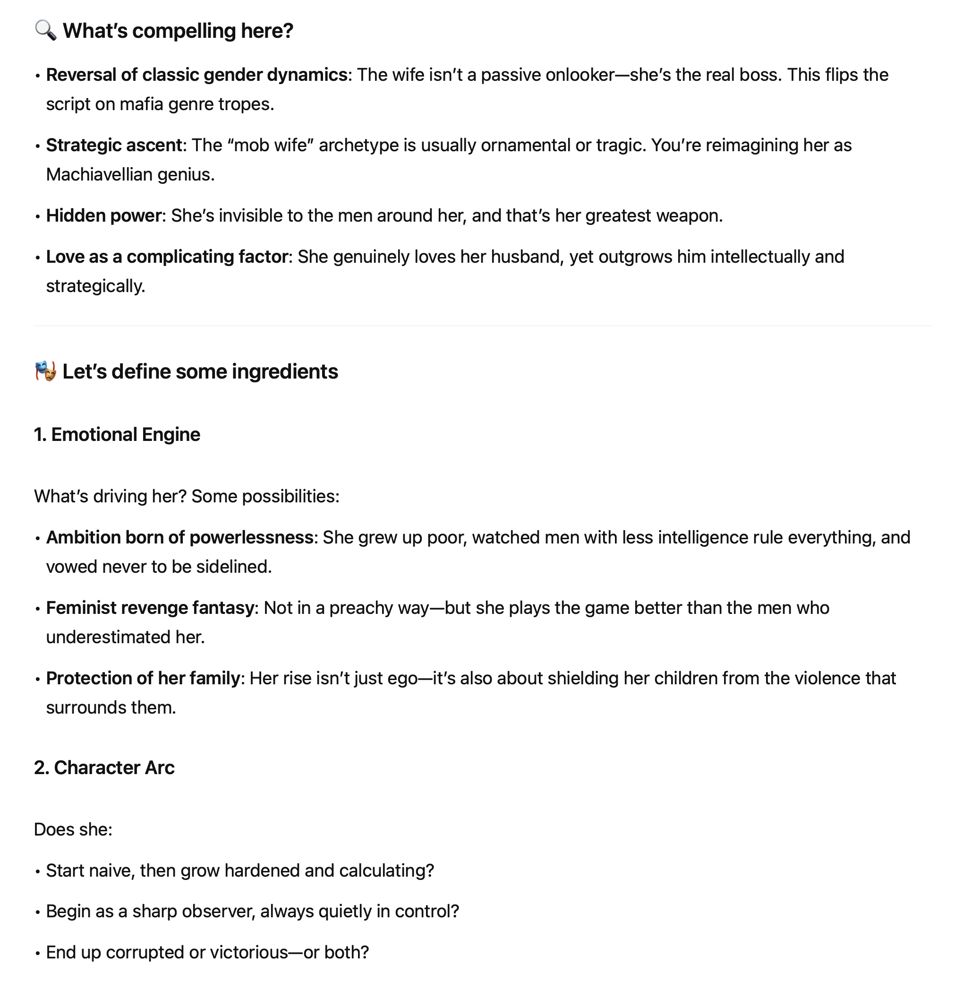
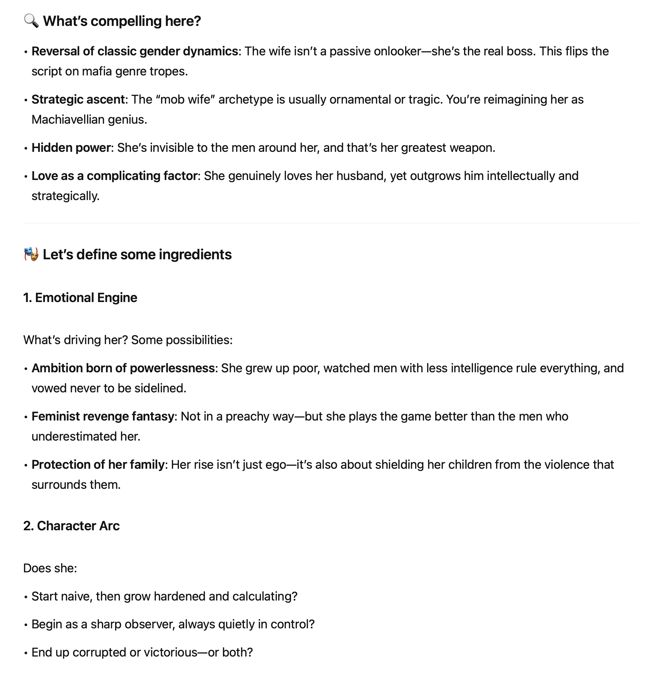

Developing an idea for a screenplay
I was asked to give a talk for Machine Cinema’s Gen-Dojo, a group of filmmakers interested in AI. Here’s an AI recap of my talk.
Using AI as a Creative Partner — Not a Replacement
Speaker: Sunjay Dixit, for Machine Cinema’s Gen-Dojo
Core Idea:
Don’t use AI to generate your creative work. Use it to draw it out of you.
“Instead of asking AI to be creative, ask it to help you be creative.”
🔄 The Reframe: Socratic AI
I shared a framework I call Socratic AI—a way to use tools like ChatGPT or Claude as a thinking partner, not a prose generator.
Rather than asking:
- “Write my essay”
or
- “Suggest a thesis for this assignment”
Try this:
- “Ask me tough questions to help me clarify my own thesis.”
💡 Why It Works for Writers
We became writers because we have something to say. We have stories, ideas, humor, insights—a voice. An LLM doesn’t know what’s in your head. But it can help you get it out.
Writing is hard. First drafts rarely capture the personality or insight we imagined. That’s where AI can help—not by doing the work for you, but by prompting you, pushing you, sparring with you. Like a writing partner in a room who asks, “Yeah, but why does she do that?” or “What’s the emotional truth here?”
🛠Real Example: Rewriting a Mafia Classic
I shared a screenplay idea I’ve been developing—a mafia story told from the POV of the mob wife, who turns out to be the true mastermind behind her husband’s rise.
Instead of asking AI to write it, I used it to talk it out. I fed it the premise and asked it to ask me follow-up questions. That’s when things came alive. The questions—What’s her background? How does she learn the rules? What’s driving her?—helped me refine my own thinking and deepen the story.
“I don’t find it hard to talk to ChatGPT. I find it hard to stare at a legal pad and force myself to write ‘FADE IN.’ But if I say, ‘Here’s my idea,’ and it says, ’Interesting. What happens next?’—I’m off and running.”
🧠The Underlying Principle
We think of AI as something we prompt—but what if we let it prompt us?
“Instead of seeing the AI as a question-answering machine, treat it like an interviewer, a writing coach, a curious collaborator.”
That switch—from answerer to asker—has been transformational for me. It’s not about outsourcing the work. It’s about sparking creativity, sharpening ideas, and making the work more joyful.
Example
 
